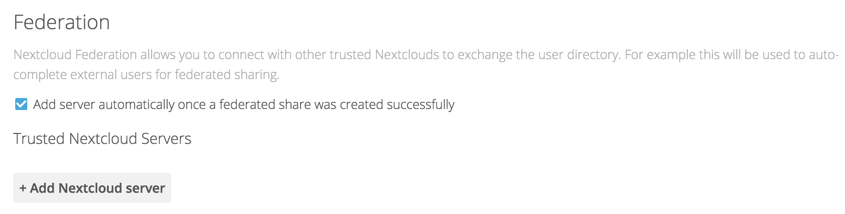
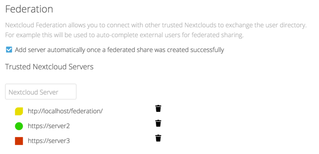
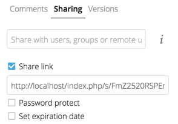
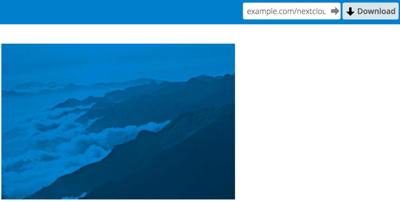
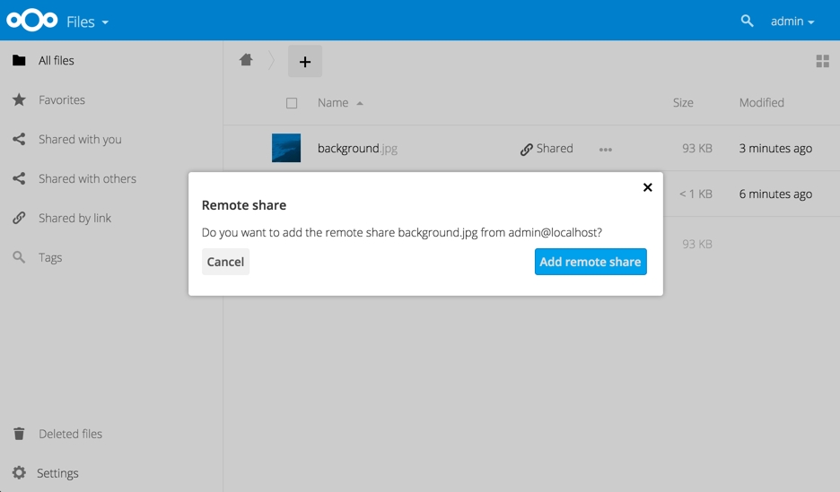

Configuring Federation Sharing¶
Federated Cloud Sharing is now managed by the Federation app (9.0+), and is now called Federation sharing. When you enable the Federation app you can easily and securely link file shares between Nextcloud servers, in effect creating a cloud of Nextclouds.
Creating a new Federation Share¶
Follow these steps to create a new Federation share between two Nextcloud servers. This requires no action by the user on the remote server; all it takes is a few steps on the originating server.
- Enable the Federation app.
- Go to your Nextcloud Admin page and scroll to the Sharing section. Verify that Allow users on this server to send shares to other servers and Allow users on this server to receive shares from other servers are enabled.
- Now go to the Federation section. By default, Add server automatically once a federated share was created successfully is checked. The Federation app supports creating a list of trusted Nextcloud servers, which allows the trusted servers to exchange user directories and auto-complete the names of external users when you create shares. If you do not want this enabled, then un-check it.

- Now go to your Files page and select a folder to share. Click the share
icon, and then enter the username and URL of the user on the remote Nextcloud
server. In this example, that is
freda@https://example.com/nextcloud. When Nextcloud verifies the link, it displays it with the (remote) label. Click on this label to establish the link.

- When the link is successfully completed, you have a single share option, and that is can edit.

You may disconnect the share at any time by clicking the trash can icon.
Configuring Trusted Nextcloud Servers¶
You may create a list of trusted Nextcloud servers for Federation sharing. This allows your linked Nextcloud servers to share user directories, and to auto-fill user names in share dialogs. If Add server automatically once a federated share was created successfully is enabled on your Admin page, servers will be automatically added to your trusted list when you create new Federation shares.
You may also enter Nextcloud server URLs in the Add Nextcloud Server field. The yellow light indicates a successful connection, with no user names exchanged. The green light indicates a successful connection with user names exchanged. A red light means the connection failed.

Creating Federation Shares via Public Link Share¶
Check the Share Link checkbox to expose more sharing options (which are
described more fully in File Sharing). You may create a
Federation share by allowing Nextcloud to create a public link for you, and then
email it to the person you want to create the share with.

You may optionally set a password and expiration date on it. When your recipient receives your email they must click the link, or copy it to a Web browser. They will see a page displaying a thumbnail of the file, with a button to Add to your Nextcloud.

Your recipient should click the Add to your Nextcloud button. On the next screen your recipient needs to enter the URL to their Nextcloud server, and then press the return key.

Your recipient has to take one more step, and that is to confirm creating the federated cloud share link by clicking the Add remote share button.

Un-check the Share Link checkbox to disable any federated cloud share
created this way.
Configuration Tips¶
The Sharing section on your Admin page allows you to control how your users manage federated cloud shares:
- Check
Enforce password protectionto require passwords on link shares. - Check
Set default expiration dateto require an expiration date on link shares. - Check
Allow public uploadsto allow two-way file sharing.
Your Apache Web server must have mod_rewrite enabled, and you must have
trusted_domains correctly configured in config.php to allow external
connections (see Installation Wizard). Consider also
enabling SSL to encrypt all traffic between your servers .
Your Nextcloud server creates the share link from the URL that you used to log
into the server, so make sure that you log into your server using a URL that is
accessible to your users. For example, if you log in via its LAN IP address,
such as http://192.168.10.50, then your share URL will be something like
http://192.168.10.50/nextcloud/index.php/s/jWfCfTVztGlWTJe, which is not
accessible outside of your LAN. This also applies to using the server name; for
access outside of your LAN you need to use a fully-qualified domain name such as
http://myserver.example.com, rather than http://myserver.